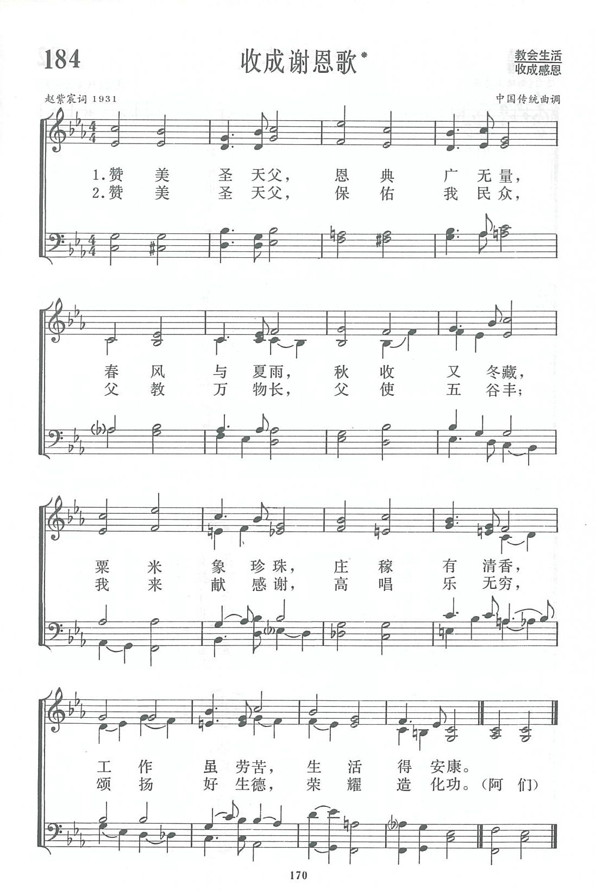
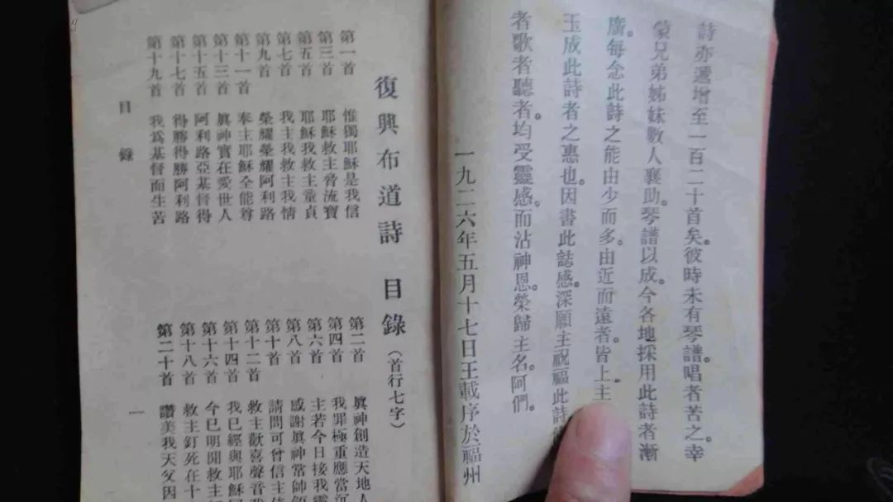
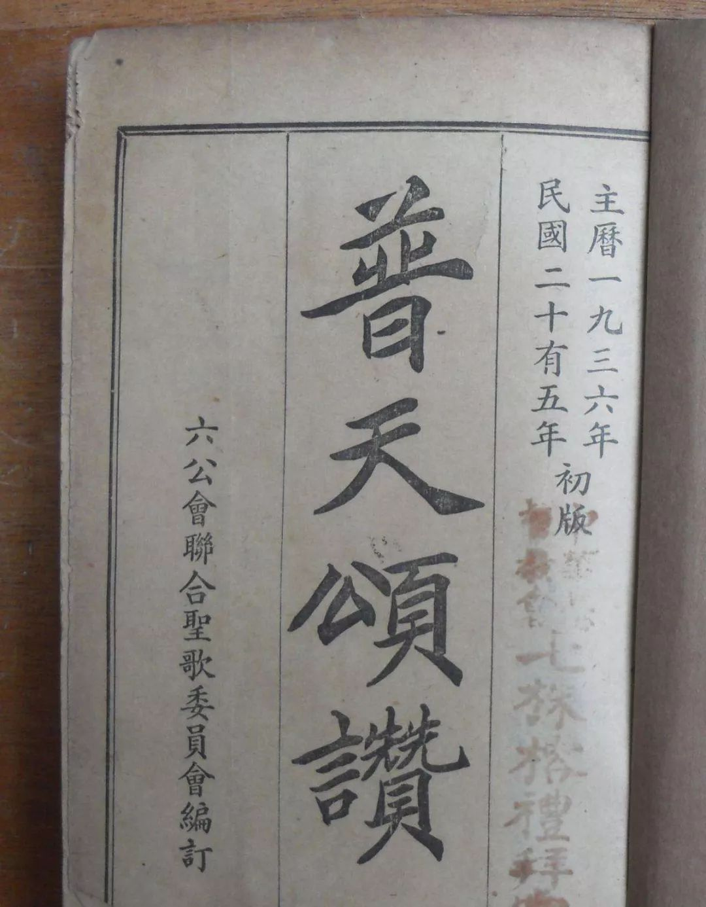

|
|
讚美詩(新編) 第184首《收成謝恩歌》 |
|
|
|
|
https://www.zanmeishige.com/tab/13857.html?songbook=1&index=184
 |
|
|
|
|

https://www.youtube.com/watch?v=qczE6zWkia8
第184首 收成感谢歌* _赵紫宸 HARVEST SONG
经文：“你浇透地的犁沟，润平犁脊，降甘霖使地软和；其中发长的，蒙你赐福”(诗65：10)。
《收成感谢歌》的词作者是赵紫宸博士(事略参阅第3O首)。
曲谱来源是孔庙祭孔时的音乐《大成乐章》中的一段叫《宣平》，所以乐曲就命名为《宣平》，经范天祥配以和声。祭孔时不只有音乐而且还有舞蹈，乐曲中可听出舞蹈的节奏。天主教台湾籍名音乐家江文也先生也曾为这首乐曲配乐，并将和声改为管弦乐曲。
这首诗选自《普天颂赞》，据悉有的外国赞美诗也选用了它。
【大成乐章·宁和之曲】明代释奠礼雅乐 奠帛初献佾舞
https://www.bilibili.com/video/BV1a4411M74M?spm_id_from=333.337.search-card.all.click
中国新教圣诗本色化的开端
第一本由中国教徒独自编纂的赞美诗集来自于中华基督教青年会。中华基督教青年会是由美国人来会理博土（Dr.D. Willard Lyon，1870-1949）创立的。来会理出生在浙江余姚，其父母是美国基督教长老会的传教士，10岁时随父母回美国接受教育。1895年，来会理受美国基督教青年会和北美协会派遣，携夫人来华组织开展青年会活动。他在天津创办了中国第一个基督教青年会组织——天津中华基督教青年会，后又赴上海、北京等地组织基督教青年会。
来会理曾编辑过一本《青年诗歌》，选有诗歌47首，原来只是供“青年会大会及联会”使用，共刊印了四版。随着各地基督教青年会的迅速兴起，原来的诗歌已经不能满足需求，1908年，时任青年会机关刊物《青年》副主编的谢洪赍对此诗集进行增补，他自己创作并翻译了30余首诗歌，并从《颂主诗歌》《江南赞美诗》中又选取50首，将其由47首扩充为130首，仍旧命名为《青年诗歌》（谢洪赉：《青年诗歌》序言，《青年诗歌》，中华基督教青年协会书报部刊行1918年版。），有人认为这是最早由中国基督教徒独立编译的圣诗集，“开创了基督教圣诗音乐歌词本色化的开端”（王鑫：《基督教(新教)圣诗音乐中国本色化探研》，硕士学位论文，南京艺术学院，2006年，第9页。陈伟也认为《青年诗歌》乃谢洪赉主编，参考陈伟：《中国基督教圣乐发展概况》，《中央音乐学院学报》2003年第3期。）
严格地说，这本诗集乃是谢洪赉对来会理版《青年诗歌》的增补本，不过在此过程中，谢洪赉的贡献已经远远超出了来会理，正是由于谢洪赉的增补工作，使得此诗集在社会上的影响力大大增加。仅两年时间，该诗集就印刷至第五版，此后又多次再版，1925年增订至第十二版，还出版了带乐谱的《附谱青年诗歌》，期间谢扶雅也参与过此诗集的编修工作。1928年顾子仁将该诗集加以修订扩增后出版为《最新青年诗歌》，内有圣诗192首，附录“赓歌集”，包含有爱国诗歌及团体诗歌47首。“赓歌”原意为“酬唱和诗”，这里是借用别的诗歌的曲调又赋新词。基督教女青年会也曾于1919年在上海出版了一本《中华基督教女青年诗歌》。
1911年，山东省长老会选出七人圣诗编辑委员会，七人中只有赫士一人是外国人，其余六人于志圣、周书训、张松溪、王元德、袁景奎、袁德沾都是中国人，开创了国人集体编纂基督教圣诗之先河。（王神荫：《中国赞美诗发展概述》（上），《基督教丛刊》1950年第26期）他们以美国长老会的圣诗为蓝本，主要采用倪维思（JohnL·Nevius）、狄考文（Calvin W·Mateer）两位翻译的二百余首圣诗，然后又从《颂主诗歌》《颂主诗集》《赞主灵歌》《信徒圣诗》《复兴圣诗》等圣诗集中选择部分诗歌编纂为《赞神圣诗》。
《赞神圣诗》对用字较为重视，“在翻译时逐字逐句加以推敲，对押韵也相当注意”。歌词本于1914年出版，华北长老会另选六人组成乐谱委员会，于1917年由上海长老会印制出五线谱本，每页上半部为线谱，下半部为文字，线谱与歌词分开。全书计55类总目录，收录圣诗390首，并附有颂神赞（三一颂）、圣咏及教会婚丧礼仪式等。此书后来有多种版本，影响深广。此外，1922年王载和一批同道在福州仓前山十二间排赁房开堂布道，创办基督徒聚会处，为应对聚会需要，印发了一些诗歌，当时只有三十余首，后增加到120首并配曲谱，于1923年在福州出版，名为《复兴布道诗》，出版后在聚会里使用。此集差不多有一半选译自美国赞美诗作家艾拉·桑基（Ira David Sankey，1840—1908）所编的《圣歌与独唱》（Sacred songs and solos）一书，其余选自别的诗集或者是新创作的。（王神荫：《中国赞美诗发展概述》（上），《基督教丛刊》1950年第26期）

民国36年《复兴布道诗》
二 国人圣诗创作编辑的高峰
随着教会自立运动的发展，20世纪20年代末以后，由国人编辑出版圣诗已经成为主流。当时，在中国各地都有差会的中华圣公会，由于各地差会背景不同，同时各地方言也不一致，遂在各地产生了许多不同的赞美诗集。为了改变这种各自为政的局面，中华圣公会于1928年召开全国代表大会（总议会）时决议成立一个特别委员会，负责为全国圣公会各教区编纂一部统一的诗本。由各教区选派一到两名委员组成编委会，委员中仅有南京教区的美国圣公会郝路义女士（Louis Strong Hammond，1887—1945）和鄂湘教区的美国传教士康丽霞女士为外籍，其余几位均为国人。
由郝路义女士推荐，精通中外宗教音乐但没有教职的杨荫浏先生亦被聘为委员并主持日常工作，每日工作半天。经过了三年努力，该委员会于1931年出版了《颂主诗集》，计诗466首，分别注明是选录、新译或创作，按周年节令等分为十大类，未附《十戒》和《主祷文》，由江苏无锡协成印刷公司代印。该诗集的特点是文言与白话兼用，同时在各诗之下，尽可能地注明作者国籍、姓名与生卒年份，一方面便于考证，一方面可以增加读者的兴趣，这在中国圣诗集编辑方面是一种创举。此诗集还一改以往诗集多为编译西方圣诗的惯例，向社会广泛征求创作圣诗，征得圣诗将近1000首，最后收集国人新创作的圣诗36首，虽然在诗集中所占比例仍然很小，但已属难得。而且，此举也开创了后世圣诗集编辑广泛向社会征集圣诗的先例，具有非常重要的历史意义。
1931年，由赵紫宸先生译词，范天祥（Bliss Mitchell Wiant，1895—1975）先生配曲，为燕京大学基督教团契编纂了一本《团契圣歌集》，共有圣诗124首，都是历代教会名歌，主要是面对青年学生用的。为方便，最先是油印一部分分给团契中的学生教徒使用，后来由北京燕京印刷所承印，1933年再版又增译了二十余首，加上荣耀颂、应祷歌等共155首。
赵紫宸先生翻译非常认真，文辞优美，歌词不仅有古体诗——骚体，而且还有绝句、白话文言以及纯白话。王神荫先生称其是“国人编译赞美诗最认真、最负责，而文词又最美致者”。（王神荫：《中国赞美诗发展概述》（下），《基督教丛刊》1950年第27期）在该圣歌集的序言中，赵紫宸记述了翻译圣诗的经验与艰辛：“译诗须有相当的训练，译赞美诗更须有相当的训练。
-
第一是心灵的修养。译者若不切心景仰上帝，若不追求宗教上的了解与颖悟，自然是不能透入作者的神韵，宣达诗中的美感。
-
第二是修辞的练习。在这一端上，译者须要注意文、意、声、韵四端。文是词藻，意是含义，声是节奏，韵是谐声；四者俱备方可成歌，歌须是诗，诗须是歌，二者兼至方可谓是赞美诗。往往原诗愈佳，情愈丰，则移译亦愈难。
在我的经验中，每译最上乘的诗，总须涂改数十次，几须呕出心肝来才止。”（赵紫宸译诗，范天祥校乐：《团契圣歌集》〈序〉，燕京大学基督教团契，1931年。）圣歌翻译为赵紫宸的圣歌创作提供了借鉴并积累了经验，1931年他与范天祥合作，还专门针对民众，尤其是农村民众出版了一本《民众圣歌集》，此集共有圣诗54首，歌词完全由赵紫宸先生创作，他采用古诗词如《浪淘沙》《花月吟》《如梦令》等词牌结构，有的模仿民谣风格，因此唱起来亲切、上口。
曲调由范天祥先生编配，全都选配中国曲调。范天祥在其书中的序言里说：“本集所收的调，皆系中国旧调，未经丝毫的修改。这些调子或出于顾子仁博士的《民间音乐》，或出于王女士的《小白菜》，或出于胡杜两牧师所采集的民歌。我们但取调子，自配四声。……佛教音乐亦收一二。集中所有民歌，皆系国内所流行的调子，或全国流行的，或一隅流行的。”本集所采用调子如《锄头歌》《如梦令》《宣平》（出自孔庙祭孔《大成乐章》）、《江上船歌》《孟姜女》等。这两本圣诗集由于使用对象不同，故风格也有很大不同，前者文辞优雅深邃，后者平实易懂；前者都是翻译西方圣诗，音乐也是西方的，后者则都是作者的创作，采用的是中国民间音乐，调子也比较普通。这两本圣诗集都是中国圣乐本色化非常有意义的尝试，对后来赞美诗集的编译出版，尤其是对1936年版《普天颂赞》的编译出版产生了非常重要的影响。
赵紫宸先生
《民众圣歌集》第1首《清晨歌》是赵紫宸所写的流传最广的一首圣歌，由前燕京大学音乐系学生胡德爱写曲，后由范天祥配和声，收入1936年出版的《普天颂赞》第425首。1946年范天祥夫人将其译为英文，在介绍中国创作圣歌和民歌曲调的一本小册子——《塔》内发表，引起广泛注意。1964年被选入美国卫理公会新编圣歌第678首，是美国赞美诗选录的第一首中国人创作的圣歌。就在圣公会《颂主诗集》编辑之时，中华基督教会（Church of Christ in China）、中华圣公会（Chung Hwa Sheng Kung Hwei）、美以美会（Methodist Episcopal Church North）、华北公理会（North China Kung Li Hui）、华东浸礼会（East China Baptist Convention）、监理会（Methodist Episcopal Church South）6个公会组成“联合圣歌编辑委员会”，商议在各公会所使用的赞美诗的基础上筛选编订一本联合的赞美诗集。由范天祥、杨荫浏、沈子高、刘廷芳、周淑安、文贵珍、江民志、费佩德、铁逊坚、鲍哲庆等组成编委会，刘廷芳担任编辑会主席和文学委员会主席，杨荫浏担任总干事，范天祥担任音乐编辑。历经几年的筹备、搜集、筛选、订正、编撰，新编诗集《普天颂赞》于1934年11月交由上海广学会出版，1936年全国发行，包括五线谱本、数字简谱本和五号文字本三种版本，初版发行量达11.4万本。
《普天颂赞》曾多次出版，各种版本到了1947年共出版了57.2万本。（林苗：《重识杨荫浏的基督教音乐实践观——对〈圣歌与圣乐〉中杨荫浏16篇文论的择评》，《艺术探索》2008年第6期）是当时发行量最大也是影响最为广泛的赞美诗集，《普天颂赞》成为当时国内基督新教赞美诗的集大成者，同时也是历来所编诗集中最具有本色化与统一性的诗集。
全书一共512首圣诗，其中62首是中国人创作的歌词，其余均为译作。
包括曲调548首，
72首是中国风格的曲调，这些曲调中有5首取自古琴《阳关三叠》《极乐吟》及词调《满江红》《如梦令》和吟诗调，有7首取自古代流传的曲调，
2首是民间流行的曲调，
23首是外国教士模拟中国音乐风格创作，
34首是中国作者所作。
《普天颂赞》搜集的圣诗从唐代大秦景教时代一直到20世纪30年代，不仅有
8世纪大秦景教《三威蒙度赞》、
明朝耶稣会神父吴渔山的《仰止歌》、
清朝康熙皇帝《十架歌》，
还有20世纪各译词人、写词人的作品，如“赵紫宸、杨荫浏、刘廷芳、刘廷蔚、李抱忱、梁季芳、谢婉莹、田景福、陈梦家、许地山、苏引兰、戴淑明、裘昌年、杨镜秋、沈子高、蒋翼振”等都曾或编译，或创作，或改编词曲，其中由杨荫浏与刘廷芳合作翻译、修订的有210首，占整个集子的三分之一还多，这210首中，由杨阴浏先生自己单独译订的竟达150首之多，其中有13首是他自己谱的曲，有10首是自己作的词，很多圣诗曲调具有浓厚的中国传统音乐风格。
（杨周怀：《杨荫浏先生在中国基督教赞美诗的翻译、编曲、作曲及作词方面所做的贡献》，《中国音乐学》1999年第4期）许地山根据英国国歌的格律填词的《神佑中华歌》，杨荫浏为其谱了中国曲调《美地》，使这首爱国圣诗有了新的形式和乐谱，表达了中国信徒的爱国热诚。

《普天颂赞》
《普天颂赞》的影响目前仍在全世界华人教会中延续，在其出版发行近50年以后的20世纪80年代，中国基督教两会编辑出版了《赞美诗（新编）》，在编排体例和音调方面也都继承了《普天颂赞》的传统，《赞美诗（新编）》在大陆教会中已经使用了30多年，目前仍在发挥着非常重要的作用。1970年，香港地区由中华基督教会香港区会、圣公会港澳教区、中华基督教循道公会、卫理公会及潮语浸信会各派出两名代表组成《普天颂赞》咨询委员会，对1936年版《普天颂赞》进行修订，由著名圣诗专家黄永熙博士担任主编，此次修订历时七年，其间共开了108次会议才将歌词与曲调完全审阅完毕。（杨伯伦：《圣乐耆宿黄永熙》，《基督教周报》（香港），1997年）1977年，
《普天颂赞》（修订本）由香港基督教文艺出版社出版发行，共有圣诗680首，比原来增加130首，其中淘汰了原有的诗歌大约100首，另加添了约200首，还有一些是重新编译和配曲的。1981年出版英文版，这是中国第一本中英文双语圣诗集。
《普天颂赞》修订本是当时收集古今中外圣诗代表作最广的华文圣诗集，被国内教会用作圣诗学的教材。1994年以后，由中华基督教会香港区会、香港圣公会、循道卫理联合教会派出代表又组成了新修订版编辑委员会，对1977年版进行重新修订，已经二次退休的黄永熙博士再次由美返港担任名誉主编，谭静芝博士担任主编，参与编修工作的有来自全球各地不同宗派背景的华人同道近百人，足以证明各宗派的共融与合一。新修订本体现了最近30年来世界圣诗与华人圣诗发展的最新成果，使其能够体现现今世界所出现的生活、社会、伦理课题，“特别加入社会公义、环境保护、人性尊严、世界和平，以及专门讲及儿童、妇女、青年和长者的圣诗”。（苏成溢：《有关〈普天颂赞〉（新修订版）的构思和特色》，基督教文艺出版社网站）《普天颂赞》新修订版于2006年9月30日面世。新修订本有916首诗歌，144篇诗篇，并在索引上有经文、分题、祷文标题、礼仪、节日、版权所有者等不同索引。新修订的《普天颂赞》其编辑理念与品质能够与西方最优秀圣诗集相媲美，迄今在海内外很多华人教会中广泛使用，并成为华语圣诗集的范本。此外，多首华人原创圣诗还被翻译成英文并编入西方教会圣诗集中，可以说《普天颂赞》及其后来两种修订版是华语圣诗本色化的最优秀体现，也是华语圣诗对世界圣诗发展的最大贡献。
另外，《普天颂赞》在中国新文学史上也有很重要的地位，朱维之教授认为“民国以来，中国基督教对于中国文学上最大贡献，第一是《和合译本圣经》的出版，第二便是《普天颂赞》（36版）的出版”。（朱维之：《基督教与文学》（修订版），基督教文艺出版社1981年版，第151页）《普天颂赞》与和合本《圣经》，作为中国基督教文学的奠基之作，是基督教对中国新文学的巨大贡献。
在民国时期我国圣诗创作者之中，除了赵紫宸先生，还有贾玉铭牧师也是非常出色的。贾玉铭牧师是民国时期我国圣诗词作家中作品最多的一位，他一生中创作了五百多首圣诗，出版了四部诗集：《灵交诗歌》（1930）、《得胜诗歌》（1938）、《灵交得胜诗歌》（1941）和《圣徒心声》（1943）。其中影响最大的是《圣徒心声》，有诗530首，在贾牧师创作诗歌中篇幅最多，流行较广。贾牧师在《圣徒心声》的序言中介绍这本诗歌有三种特色：第一，诗歌中五分之四写于民族抗战期间；第二，诗歌也是生命真理的流露，以此颂主，非但希望“声闻于天”，亦可借以贯彻真理，发育灵命；第三，诗歌中五百三十首乃中国产物，包含中国信徒崇拜时心灵所发之颂词，故特称《圣徒心声》，所用曲调多已在教会通用。（贾玉铭：《圣徒心声》〈序〉，南京灵修学院1948年版，第2页）贾玉铭牧师的诗歌比较注重个人的主观体验以及信徒与神直接交流的感受，是感灵而作的，体现出一个中国基督徒的心路历程。
由王载、倪柝声等人成立的福州基督徒聚会处编纂的《小群诗歌》影响也非常大，此诗集于1927年由上海福音书房出版发行。诗集出版后供上海及全国其他地方的基督徒聚会处使用。初版时封面印上“诗歌”二字，下端有“小群”两个小字，许多人因此称之为《小群诗歌》。这本诗歌里收集了180首圣诗。该歌集中有许多独到的地方，很能适合中国信徒的使用。《小群诗歌》的销路很广，除了在上海出版外，抗战期间还在西安出版。除了这个《小群诗歌》外，《诗歌》（暂编本）也还有很多版本，第一版《诗歌》（暂编本）编于1928年，到1949年出至第27版。1952年，上海福音书房又出版了《诗歌》（增订暂编本），共有诗歌1052首。以后许多诗歌本，都是源于这本增订暂编本。如1983年12月香港基督徒聚会所出版《诗歌》（增选本）。除其中五首是他们自己写作，三首从别的诗集采入外，其余均选自《诗歌》（增订暂编本）（1052首），诗歌总计482首。其诗歌仍依照增订暂编本的分类，只是编辑了首数的先后。1993年6月，福州聚会处编印的《诗歌》（选本），也是《诗歌》（增订暂编本）的选本。选本出现后，就较少使用这本增订暂编本了。（王秀缎：《福州基督徒聚会处的诗歌初探》，《萍乡高等专科学校学报》2005年第3期）
这时期中国基督徒编纂的赞美诗集还有不少，如著名爱国实业家武柏祥是虔诚的基督教徒，同时也很擅长音乐，在哈尔滨他开办的同记工厂里组织有“百练国韵歌咏团”并由他亲自指挥排练，专门为教会服务，每到周末他就带领歌咏团的工人们到礼拜堂去唱圣诗。
1926年，他组织成立了“哈尔滨中华基督教合唱团”，推动了哈尔滨的教会本色化运动。他采用中国北方的曲调，为圣经诗篇编曲，1935 年，他编印出版了《国韵诗篇百首之单音简本》，收录中国曲调诗篇25首；20世纪40年代，他又出版了《国韵诗篇百首》和《国韵馥香诗篇百首选》两本赞美诗集，主要是供“百练国韵歌咏团”和“哈尔滨中华基督教合唱团”使用，他亲自带“百练国韵领歌咏团”在“百代公司”录制国韵诗篇的唱片，分发黑龙江省内外教会。此外，还有孙喜圣编著《奋兴布道诗歌》（1912）、汕头黄廷宾辑《奉主诗歌》（1921）、刘湛恩编《公民诗歌》（1926）、龚赉译述《福音诗歌》（1930）、李抱忱编《普天同唱集》（1932）、王明道著《基督徒诗歌》（1936）、李广业编《救恩新歌》（1941）、赵世光编《灵粮诗歌》（1947）等等。这些中国教徒自己编纂的圣诗集虽然只是当时所编圣诗集中的少数，却也足以展现出当时中国基督徒对于圣诗中国化的努力。
当时，基督教各差会都有自己的出版社印刷赞美诗，如早期仅上海印刷赞美诗的机构就有：墨海书馆（1843年由英国伦敦会传教士麦都思、美魏茶、慕维廉、艾约瑟等在上海创建，1863年停业。）、清光绪十三年（1884）的同文书会（清光绪二十年（1892）改名广学会。）、、中华浸会书局、美华书馆（美国长老传教印书馆，前身是1844年在澳门开设的花华圣经书房(The Chinese and American Holy Classic Book Establishment)，1845年迁往宁波，1860年迁至上海，改名美华书馆。）、华美书馆（由宋耀如（宋查理）所建，初期称华美书坊，1920年代后称协和书局，1930年代称广协书局。）、青年协会书局、中国圣教书会、福音书局等。福建则有福州美华印书局（1859年成立，1903-1904年间，书局主体部分迁往上海，成立华美书局。福州美华印书局仍被保留下来，成为华美书局的分局，其出版活动持续至1915年盘给一家中国基督徒办的公司为止。）、兴化美华书局、红衣教团出版社、闽北圣教书会和闽南圣教书会等。
出版事业的活跃也为圣诗集的编纂出版带来了极大的便利，有利地推动了圣诗集的出版。这些隶属于不同差会的出版机构出版发行了大量的圣诗集，不仅有翻译西方的圣诗作品，而且还有大量国人新创作的作品，20世纪上半叶可以说是中国赞美诗集出版和创作的高潮，有些成就迄今仍难超越。除了集中的编纂，零散地发表在基督教刊物杂志上的圣歌也有一些。此外，还有一些大型的基督教音乐作品问世，如我国著名的作曲家和音乐教育家张肖虎与赵紫宸先生合作，于1944年创作了大型清唱剧《圣诞曲——基督降生神乐》，包含八个段落，以民族五声调式为主，结合西洋音调，并运用了复调音乐的技巧。此曲当年在天津基督教会首演，引起强烈反响，此后天津青年队合唱团男队将其作为主要曲目进行练习演唱。
另外，当时还出现了专门讨论圣歌与圣乐的刊物。为了配合《普天颂赞》的编订工作，1934年3月，燕京大学宗教学院《真理与生命》第8卷第1期开始附增刊《圣歌与圣乐》，其副题为“讨论教会圣歌与音乐的刊物”，主编者为刘廷芳和杨荫浏。此刊每年4期，在3月、5月、10月、12月的《真理与生命》中发表，共出刊14期，包含33篇文章，其中由杨荫浏独自或与刘廷芳、费佩德等人合作撰写、翻译的有16篇，主要是讨论圣诗的遴选、翻译、和声、词曲编配等问题，尤其是对圣乐中国化进行了非常有意义的探讨，其成果都直接体现在1936年出版的《普天颂赞》这本诗集中，可以说《圣歌与圣乐》是《普天颂赞》的编辑手记和实践经验总结，很多观点对于我们今天的圣诗创作与编译仍然具有非常好的指导意义。杨荫浏先生在探索圣诗民族化道路上所做的努力还有很多，为了体现中国音乐对位化的和声手法的运用，1941年12月，杨荫浏和郝路义合作编著了一本《古调新声》（笔者未亲见此诗集，由中国艺术研究院音乐研究所编，江苏文艺出版社2009年12月出版的《杨荫浏全集》（13卷）亦未收集此诗集。
关于此诗集的介绍主要来源于王雪辛所著《中国赞美诗旋律民族化探索》（上海：中国基督教两会2004年版）。）诗集选取了42首赞美诗进行两个声部的对位处理，希望用这种手法来丰富中国赞美诗的表现手法。在该书的前言，作者对四部和声和二部对位进行了说明：“四部和声中，只有一个曲调是独立的曲调，其余三部，都是附属于这个主调的配音；二部对位中，所有两个曲调，都是主调，分开来可以独立，合拢来可和成一片。在四部和声中，和声的成分比较丰富，而旋律的韵味却比较淡薄；在二部对位中，和声的力量比较空疏，而旋律的神趣却比较浓厚。这是两种谱法，在性质上有根本不同之处。”（转引自王雪辛《中国赞美诗旋律民族化探索》，中国基督教两会2004年版，第6页）尽管这42首赞美诗在和声运用上仍然属于传统的大小调和声，还没有做到和声的中国化民族化，但对位化的和声突出了旋律，更接近中国信徒的审美情趣。（王雪辛：《中国赞美诗旋律民族化探索》，中国基督教两会2004年版，第6页）这些圣诗民族化的有益尝试对今天我国的圣诗创作仍然具有很好的借鉴意义。
原载《田园拾穗》第90页-107页
https://www.sohu.com/a/238117093_173378